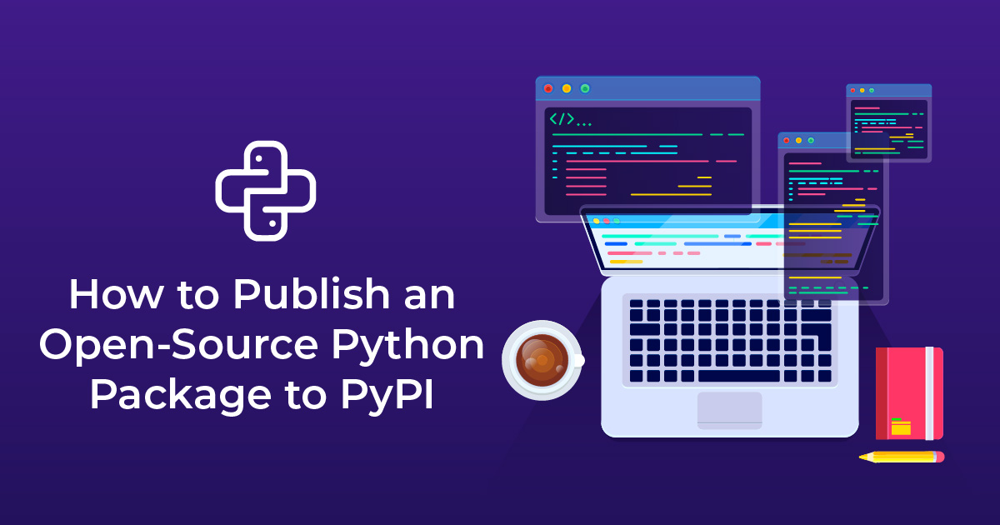
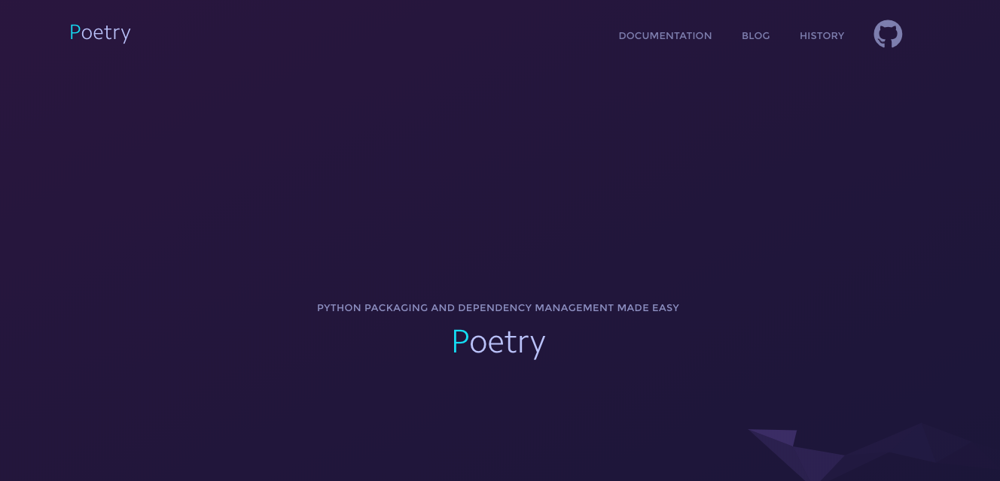

总结: 如果需要适配多种场景，Python 打包真是错综复杂！
[新] 在 2019 年，我应该如何管理 Python 包呢？=> Poetry
- 首先使用
Poetry创建开发环境，并使用严格模式指定项目的直接依赖。 - 创建一个
pyproject.toml文件，然后使用poetry其创建源代码版和二进制发行版。 - 下一步要指定抽象包依赖，注意应指定你能确定的该包可运行的最低版本。
[旧] 在之前的时期，我们可以使用老方法 => setuptools
- 创建
setup.py文件，在文件中指定所有的抽象依赖，并在install_requires中指定这些依赖使用可工作的最低版本。 - 创建
requirements.txt文件，在其中严格指定具体的版本直接依赖。接下来你将会需要使用这个文件生成实际的工作环境。 - 使用命令
python -m venv或pyenv创建一个虚拟环境，激活该环境然后在该环境下使用pip install -r requirements.txt命令安装依赖。- 开发环境: 创建
dev-requirements.txt文件 - 测试环境: 创建
test-requirements.txt文件 - 正式环境: 创建
prod-requirements.txt文件 - 正式环境: 创建
win-requirements.txt文件 - 环境配置冻结: 执行
pip freeze > freeze-requirements.txt命令
- 开发环境: 创建
1. 打包的发展历史
总结: 到现在还是没有最终的解决方法 => poetry > setuptools > distutils
最初情况下，当你想要创建一个源代码或者二进制发行版的时候，你需要使用一个名为 distutils 的标准库模块。该模块是使用一个名为 setup.py 的 python 脚本，项目维护人员通过执行这个文件来构建其软件的发行版，使得用户也能够安装上述发行版。这个脚本可以任意命名，但 setup.py 是标准的命名方式，其他的工具（比如广泛使用的 pip）就会只寻找以此命名的文件。而如果 pip 没有找到需要依赖的可构建版本，它将会下载源代码并构建它，简单来说，只需运行 setup.py，然后我们只能祈祷结果是好的了。
为什么说我们只能祈祷结果是好的？因为 pip 并不能保证它运行 setup.py 构建的包是真的可以运行的。它只是一个 python 脚本，也许会有自己的依赖，而你又无法在出现问题的时候修改它的依赖或者进行追踪。这是先有鸡还是先有蛋的问题了。
我们知道 distutils 是 Python 标准库的一部分，所以使用一个可执行文件(setup.py)来指定 distutils 下的构建条件是没有问题的。将构建工具作为 Python 的一部分意味着，项目维护人员如果要构建一个项目的发行版，无需担心 setup.py 有哪些外部依赖项。唯一的依赖项只是 Python 而已，因此没有必要指定任何依赖信息。
但是，distutils 模块并不好用，所以有些人找到了替代的方案，它可以做比 distutils 多得多的事，那就是 setuptools 模块。如今 setuptools 还是使用 setup.py 文件，给人以为其实它们并没有变化、创建环境的过程也保持不变的假象。
但是当一个项目选择使用 setuptools 时，像 setup.py 这样的可执行文件的使用就成了一个问题。你无法在不知道 setup.py 文件依赖关系的条件下执行它。可是，目前还没有标准的方法，在不执行存储着依赖信息的 s setup.py 文件的情况下，自动地了解它具体有哪些依赖项。这就形成了一个悖论：你不运行这个文件，你就无法知道它的内容；你不知道这个文件的内容，就无法运行它。
但是在 setuptools.setup() 中有 setup_requires 选项啊。这个方法就是个坑，你基本不能使用它解决什么问题。这还是个先有鸡还是先有蛋的问题。PEP 518 对此进行了详细的讨论，最后结论就是它就是渣渣，别用了。
2. 现在打包的方式
我们要去用 Poetry 工具，它可以为创建好虚拟环境，安装依赖即可开始编程。
我们打包 Python 包的目的，就是让所有的用户或者设备对该项目满意，虽然他们都有不同的工作流和需求。另外，当项目发生更改、发布新版本、废除旧版本，或者几乎所有代码都要依赖其他代码来完成其任务的时候会产生问题。项目中必定存在依赖，而随着时间推移，这些依赖会发生变化，它们也许是必要的也许也不是，它们可能在很底层运行，所以我们必须考虑在不同操作系统甚至在同样的操作系统中它们都可能是不可移植的。这就非常复杂了，手动头痛表情。
- 如果我们现在有的项目中直接依赖
A和B仓库，而他们两个有同时依赖于C仓库。此时，如果两个依赖的版本各不相同，这就出现了很难解决的依赖问题。 - 如果我们现在有的项目中使用的
A仓库只在windows上被安装时才需要包安装B仓库，这样的话又该怎么办呢？
为了一定程度上整治这种混乱，人们设计出代码打包的方法，这样代码包就可以被复用、安装、版本化并给出一些描述性的元信息，这样就得到了缓解。可交付实体就是我们所谓的 Python 包了，主要下面两种交付方式。
- 源代码：将源代码打包为
zip或tar.gz格式，由用户自己编译 - 二进制文件：开发者发布编译好的内容，用户可以直接使用且无需附加步骤
那我们该如何处理呢？pipenv 就是一种处理方法。它将 venv、pip 和其他一些黑科技集合在一起，你只需给出直接依赖列表，它则会尽最大努力为你解决上文提到的混乱并给你交付一个可运行的环境。Poetry 是另外一种处理方法。人们经常会讨论两者，并且由于人为和政策的原因还会引起一些争执。但是大多数人更偏向于 Poetry，因为它提供了更具兼容性、更优质的解决方案。
我需要使用 Poetry 创建工作环境，使用 setup.py/setuptools 或者 pyproject.toml 构建包。
3. 使用 setuptools 工具
长久以来很多开发者都在使用 setuptools 工具进行软件分发

Python 有非常丰富的第三方库可以使用，很多开发者会向 pypi 上提交自己的 Python 包。要想向 pypi 包仓库提交自己开发的包，首先要将自己的代码打包，才能上传分发。
# install
pip install -U setuptools
# basic use
from setuptools import setup, find_packages
setup(
name="HelloWorld",
version="0.1",
packages=find_packages(),
)
# build
python setup.py sdist3.1 打包格式介绍
Python 存在多种包格式，但是最常见的是 whl 的
Python 库打包的格式包括 Wheel 和 Egg。Egg 格式是由 setuptools 在 2004 年引入，而 Wheel 格式是由 PEP427 在 2012 年定义。使用 Wheel 和 Egg 安装都不需要重新构建和编译，其在发布之前就应该完成测试和构建。Egg 和 Wheel 本质上都是一个 zip 格式包，Egg 文件使用 .egg 扩展名，Wheel 使用 .whl 扩展名。Wheel 的出现是为了替代 Egg，其现在被认为是 Python 的二进制包的标准格式。
- 以下是 Wheel 和 Egg 的主要区别：
- Wheel 有一个官方的 PEP427 来定义，而 Egg 没有 PEP 定义。
- Wheel 是一种分发格式，即打包格式。而 Egg 既是一种分发格式，也是一种运行时安装的格式，并且是可以被直接 import。
- Wheel 文件不会包含 .pyc 文件。
- Wheel 使用和 PEP376 兼容的 .dist-info 目录，而 Egg 使用 .egg-info 目录。
- Wheel 有着更丰富的命名规则。
- Wheel 是有版本的，每个 Wheel 文件都包含 wheel 规范的版本和打包的实现。
- Wheel 在内部被 sysconfig path type 管理，因此转向其他格式也更容易。
3.2 编写 setup.py 文件
Python 打包的重中之重就是编写 setup.py 文件
- [1] 重点参数
find_packages => 找包
对于简单工程来说，手动增加 packages 参数是容易。而对于复杂的工程来说，可能添加很多的包，这是手动添加就变得麻烦。Setuptools 模块提供了一个 find_packages 函数，它默认在与 setup.py 文件同一目录下搜索各个含有 __init__.py 的目录做为要添加的包。
默认默认情况下 setup.py 文件只在其所在的目录下搜索包。如果不用 find_packages 函数，想要找到其他目录下的包，也可以设置 package_dir 参数，其指定哪些目录下的文件被映射到哪个源码包，如 package_dir={'': 'src'} 表示 “root package” 中的模块都在 src 目录中。
# 第一个参数where指定在哪个目录下搜索包
# 第二个参数exclude用于指定排除哪些包
# 第三个参数include指出要包含的包
find_packages(where='.', exclude=(), include=('*',))package_data => 包含数据文件
该参数是一个从包名称到 glob 模式列表的字典。如果数据文件包含在包的子目录中，则 glob 可以包括子目录名称。其格式一般为 {'package_name': ['files']}，比如 package_data={'mypkg': ['data/*.dat'],}。
include_package_data => 包含数据文件
该参数被设置为 True 时自动添加包中受版本控制的数据文件，可替代 package_data，同时，exclude_package_data 可以排除某些文件。注意当需要加入没有被版本控制的文件时，还是仍然需要使用 package_data 参数才行。
data_files => 包含数据文件
该参数通常用于包含不在包内的数据文件，即包的外部文件，如配置文件，消息目录，数据文件。其指定了一系列二元组，即(目的安装目录，源文件) ，表示哪些文件被安装到哪些目录中。如果目录名是相对路径，则相对于安装前缀进行解释。
manifest template => 包含数据文件
即编写 MANIFEST.in 文件，文件内容就是需要包含在分发包中的文件。
include *.txt
recursive-include examples *.txt *.py
prune examples/sample?/build- [2] 参数概述 => 官方参数说明文档
| 参数 | 说明 |
|---|---|
| name | 包名称 |
| version | 包版本 |
| author | 程序的作者 |
| author_email | 程序的作者的邮箱地址 |
| maintainer | 维护者 |
| maintainer_email | 维护者的邮箱地址 |
| url | 程序的官网地址 |
| license | 程序的授权信息 |
| description | 程序的简单描述 |
| long_description | 程序的详细描述 |
| platforms | 程序适用的软件平台列表 |
| classifiers | 程序的所属分类列表 |
| keywords | 程序的关键字列表 |
| packages | 需要处理的包目录(通常为包含 __init__.py 的文件夹) |
| py_modules | 需要打包的 Python 单文件列表 |
| download_url | 程序的下载地址 |
| cmdclass | 添加自定义命令 |
| package_data | 指定包内需要包含的数据文件 |
| include_package_data | 自动包含包内所有受版本控制(cvs/svn/git)的数据文件 |
| exclude_package_data | 当 include_package_data 为 True 时该选项用于排除部分文件 |
| data_files | 打包时需要打包的数据文件，如图片，配置文件等 |
| ext_modules | 指定扩展模块 |
| scripts | 指定可执行脚本,安装时脚本会被安装到系统 PATH 路径下 |
| package_dir | 指定哪些目录下的文件被映射到哪个源码包 |
| requires | 指定依赖的其他包 |
| provides | 指定可以为哪些模块提供依赖 |
| install_requires | 安装时需要安装的依赖包 |
| entry_points | 动态发现服务和插件，下面详细讲 |
| setup_requires | 指定运行 setup.py 文件本身所依赖的包 |
| dependency_links | 指定依赖包的下载地址 |
| extras_require | 当前包的高级/额外特性需要依赖的分发包 |
| zip_safe | 不压缩包，而是以目录的形式安装 |
- [3] 示例演示
from setuptools import setup, find_packages
setup(
name="HelloWorld",
version="0.1",
packages=find_packages(),
scripts=['say_hello.py'],
# Project uses reStructuredText, so ensure that the docutils get
# installed or upgraded on the target machine
install_requires=['docutils>=0.3'],
package_data={
# If any package contains *.txt or *.rst files, include them:
'': ['*.txt', '*.rst'],
# And include any *.msg files found in the 'hello' package, too:
'hello': ['*.msg'],
},
# metadata to display on PyPI
author="Me",
author_email="me@example.com",
description="This is an Example Package",
keywords="hello world example examples",
url="http://example.com/HelloWorld/", # project home page, if any
project_urls={
"Bug Tracker": "https://bugs.example.com/HelloWorld/",
"Documentation": "https://docs.example.com/HelloWorld/",
"Source Code": "https://code.example.com/HelloWorld/",
},
classifiers=[
'License :: OSI Approved :: Python Software Foundation License'
]
# could also include long_description, download_url, etc.
)3.3 熟悉 setup.py 命令
setup.py 文件有很多内置命令可供使用
Universal wheel=> 纯 python 代码并且支持 python2 和 python3Pure python wheel=> 纯 python 代码但不同时支持 python2 和 python3Platform wheel=> 非纯 python 代码
- [1] 参数概述
| 参数 | 说明 |
|---|---|
build |
构建安装时所需的所有内容 |
sdist |
构建源码分发包 |
bdist |
构建二进制分发包 |
bdist_egg |
构建一个 egg 分发包 |
install |
安装包到系统环境中 |
develop |
以开发方式安装包 |
register/upload |
用于包的上传发布 |
+---------------+------------------------------------------------+
| sdist | create a ".tar.gz" source distribution |
| bdist_wheel | create a "whl" distribution |
| bdist | create a built (binary) distribution |
| bdist_dumb | create a "dumb" built distribution |
| bdist_rpm | create an RPM distribution |
| bdist_wininst | create an executable installer for MS Windows |
| bdist_egg | create an "egg" distribution |
+---------------+------------------------------------------------+- [2] 注意事项
# Python Wheel for Python 2 and 3
$ python3 setup.py sdist bdist_wheel --universal upload# 在构建源码分发包时，使用sdist参数
# 在Windows下为zip格式，Linux下为tag.gz格式
# 执行sdist命令时，默认会被打包的文件
# 该命令构建的包主要用于发布，例如上传到pypi上
所有py_modules或packages指定的源码文件
所有ext_modules指定的文件
所有package_data或data_files指定的文件
所有scripts指定的脚本文件
README、README.txt、setup.py和setup.cfg文件3.4 版本命名方式
建议使用如下方式命名，当然也可以不适用这种方式。
包版本的命名格式应为如下形式
N.N[.N]+[{a|b|c|rc}N[.N]+][.postN][.devN]
从左向右做一个简单的解释
"N.N"- 必须的部分，两个 “N” 分别代表了主版本和副版本号
"[.N]"- 次要版本号，可以有零或多个
"{a|b|c|rc}"- 阶段代号，可选, a, b, c, rc 分别代表 alpha, beta, candidate 和 release candidate
"N[.N]"- 阶段版本号，如果提供，则至少有一位主版本号，后面可以加无限多位的副版本号
".postN"- 发行后更新版本号，可选
".devN"- 开发期间的发行版本号，可选
3.5 发布第三方包
PyPI(Python Package Index)是 Python 官方维护的第三方包仓库，用于统一存储和管理开发者发布的 Python 包。如果要发布自己的包，需要先到 pypi 上注册账号。然后创建 ~/.pypirc 文件，此文件中配置 PyPI 访问地址和账号。
- 编写.pypirc 文件
# 典型的 .pypirc 文件
[distutils]
index-servers = pypi
[pypi]
username:xxx
password:xxx- 接着注册项目
# 该命令在PyPi上注册项目信息
# 成功注册之后，可以在PyPi上看到项目信息
python setup.py register- 最后构建源码包发布
python setup.py sdist upload4. 使用 poetry 工具
Pipenv描绘了一个美梦，让我们以为Python也有了其他语言那样完善的包管理器，不过这一切却在后来者Poetry这里得到了更好的实现。

这几年 Pipenv 收获了很多用户，但是也暴露了很多问题。虽然 Lock 太慢、Windows 支持不好和 bug 太多的问题都已经改进了很多，但对我来说，仍然不能接受随时更新锁定依赖的设定。下面我们介绍一个看起来和事实上都更靠谱的 Python 虚拟环境和依赖管理工具 Poetry，作者是 Sébastien Eustace。尽管这是一个更年轻的工具，1.0 的正式版本还没有发布，也存在各种各样的 bug，但至少基本使用流程没有问题，用法设计也符合直觉。
Poetry 和 Pipenv 类似，是一个 Python 虚拟环境和依赖管理工具，另外它还提供了包管理功能，比如打包和发布。你可以把它看做是 Pipenv 和 Flit 这些工具的超集。它可以让你用 Poetry 来同时管理 Python 库和 Python 程序。
- 主页：https://python-poetry.org
- 源码：https://github.com/sdispater/poetry
- 文档：https://python-poetry.org/docs

4.1 安装 Poetry 工具
优先使用官方推荐的安装方式
官方推荐的安装命令是使用自带的 get-poetry.py 脚本，或者直接下载这个安装脚本 get-poetry.py，然后在本地执行。因为这个命令在安装时会从 GitHub 下载一个 7M 的压缩包，如果不用代理某些地区可能会很慢。实际测试使用代理安装耗时约 30 秒，不用代理等了 5 分钟，然后连接被重置。
# curl下载
$ curl -sSL https://raw.githubusercontent.com/sdispater/poetry/master/get-poetry.py | python如果没有用代理，可以用 pip 安装，不过 Poetry 官方文档不建议这么做，因为有可能会造成依赖冲突，可以考虑用 pipx 或 pipsi 工具。
# pip安装工具
$ pip install poetry
$ pip install --user poetry
# pipx安装
$ pipx install poetry
$ pipx upgrade poetry
$ pipx uninstall poetry
# 安装后可以使用下面的命令确认安装成功
$ poetry --version
Poetry 0.12.17# poetry工具升级
$ poetry self update
$ poetry self update --preview# Oh-My-Zsh completions
mkdir $ZSH/plugins/poetry
poetry completions zsh > $ZSH/plugins/poetry/_poetry
# ~/.zshrc
plugins(
poetry
...
)4.2 Poetry 工具特点
需要先了解一些基本概念和 Tips
- 使用
PEP 518引入的新标准pyproject.toml文件管理依赖列表和项目的各种meta信息，用来替代Pipfile、requirements.txt、setup.py、setup.cfg、MANIFEST.in等等各种配置文件。 - 依赖分为两种，普通依赖（生产环境）和开发依赖。
- 安装某个包，会在
pyproject.toml文件中默认使用upper bound版本限定，比如Flask^1.1。- 这被叫做
Caret requirements，比如某个依赖的版本限定是^2.9.0，当你执行poetry update的时候，它或许会更新到2.14.0，但不会更新到3.0.0； - 假如固定的版本是
^0.1.11，它可能会更新到0.1.19，但不会更新到0.2.0。总之，在更新依赖的时候不会修改最左边非零的数字号版本（对于SemVer版本号而言）。 - 这样的默认设定可以确保你在更新依赖的时候不会更新到具有不兼容变动的版本。另外也支持更多依赖版本限定符号。
- 这被叫做
- 不会像
Pipenv那样随时更新你的锁定依赖版本，锁定依赖存储在poetry.lock文件里（这个文件会自动生成）。所以，记得把你的poetry.lock文件纳入版本控制。 - 执行
poetry或poetry list命令查看所有可用的命令。
4.3 Poetry 简单使用
Poetry 的用法很简单，大部分命令和 Pipenv 接近。
- [1] 准备工作
如果你是在一个已有的项目里使用 Poetry 工具，你只需要执行 poetry init 命令来创建一个 pyproject.toml 文件。根据它的提示输入你的项目信息，不确定的内容就按下 Enter 使用默认值，后续也可以手动更新。指定依赖的环节可以跳过，手动安装会更高效一点。
# 用于老项目时使用
$ poetry init如果你想创建一个新的 Python 项目，使用 poetry new <文件夹名称> 命令可以创建一个项目模板。之后，会创建一个这样的项目结构，如果你想使用 src 文件夹，可以添加 --src 选项，这会把程序包嵌套在 src 文件夹里。
# 创建新项目
$ poetry new poetry-demo
# 目录结构如下所示
poetry-demo
├── pyproject.toml
├── README.rst
├── poetry_demo
│ └── __init__.py
└── tests
├── __init__.py
└── test_poetry_demo.py下来要做的就是，编写 pyproject.toml 配置文件了。当然，依赖可以直接写在配置文件中，也可以通过 poetry add 自动进行添加，其会自动找到合适的版本进行安装，包括子依赖。
# 基本信息
[tool.poetry]
name = "poetry-demo"
version = "0.1.0"
description = ""
authors = ["Sébastien Eustace <sebastien@eustace.io>"]
# 项目依赖
# 特殊依赖pendulum的版本^1.4表示(>=1.4.0 & <2.0.0)之间
[tool.poetry.dependencies]
python = "*"
pendulum = "^1.4"
my-package = {path = "../my/path", develop = false}
# 开发依赖
[tool.poetry.dev-dependencies]
pytest = "^3.4"
# 在项目的virtualenv内部执行给定命令
[tool.poetry.scripts]
my-script = "my_module:main"- [2] 创建/激活虚拟环境
确保当前目录有 pyproject.toml 文件的情况下，使用 poetry install 命令创建虚拟环境。这个命令会读取 pyproject.toml 中的所有依赖（包括开发依赖）并安装，如果不想安装开发依赖，可以附加 --no-dev 选项。如果项目根目录有 poetry.lock 文件，会安装这个文件中列出的锁定版本的依赖。如果执行 add/remove 命令的时候没有检测到虚拟环境，也会为当前目录自动创建虚拟环境。
# 配合pyenv一起使用更香
$ pyenv install 2.7.15
$ pyenv local 2.7.15
# 创建虚拟环境
$ poetry install
# 激活虚拟环境
# /Users/escape/Library/Caches/pypoetry/virtualenvs
$ poetry shell执行 poetry 开头的命令并不需要激活虚拟环境，因为它会自动检测到当前虚拟环境。如果你想快速在当前目录对应的虚拟环境中执行命令，可以使用 poetry run <你的命令> 命令。
# 快速在当前目录对应的虚拟环境中执行命令
$ poetry run python app.py
# 如果你想显式的激活虚拟环境
$ poetry shell- [3] 安装第三方包
# 使用 poetry add 命令来安装一个包
$ poetry add flask
# 添加 --dev 参数可以指定为开发依赖
$ poetry add pytest --dev- [4] 追踪/更新包
# 使用 poetry show 命令可以查看所有安装的依赖
# 可以传递包名称作为参数查看具体某个包的信息
$ poetry show
# 添加 --tree 选项可以查看依赖关系
$ poetry show --tree
# 添加 --outdated 可以查看可以更新的依赖
$ poetry show --outdated
# 执行 poetry update 命令可以更新所有锁定版本的依赖
$ poetry update
# 如果你想更新某个指定的依赖，传递包名作为参数
$ poetry update foo# update latest stable version
$ poetry self:update
# install prerelease versions
$ poetry self:update --preview
# install a specific version
$ poetry self:update 0.8.0- [5] 卸载包
# 使用 poetry remove <包名称> 卸载一个包
$ poetry remove foo4.4 Poetry 命令参数
命令行参数速记笔记
# 命令行列表
$ poetry install
about -- 关于Poetry的简短信息
add -- 向pyproject.toml添加一个新的依赖项
build -- 构建一个包；默认情况下生成一个tarball和一个wheel包
cache:clear -- 清除poetry的缓存
check -- 检查pyproject.tml文件的有效性
config -- 设置/获取配置选项
debug:info -- 显示调试信息
debug:resolve -- 调试依赖信息
develop -- 以开发模式安装当前项目(弃用)
help -- 显示命令的帮助
init -- 基于当前项目创建一个pyproject.toml文件
install -- 安装项目依赖项
list -- 列表命令
lock -- 锁定项目依赖项
new -- 创建一个新的Python项目
publish -- 将包发布到远程存储库
remove -- 从项目依赖项中删除包
run -- 在适当的环境中运行命令
script -- 执行pyproject.toml中定义的脚本(弃用)
search -- 在远程存储库中搜索包
self:update -- 更新诗歌到最新的版本
shell -- 在虚拟环境中生成一个shell
show -- 显示有关包的信息
update -- 根据pyproject更新pyproject.toml文件
version -- 显示版本信息- [1] 常用命令示例
# 创建新项目
$ poetry new my-package
$ poetry new my-folder --name my-package
$ poetry new --src my-package
# 使用老项目
$ poetry init
# 激活虚拟环境
$ poetry shell
# install
$ poetry install
$ poetry install --no-dev
$ poetry install --extras "mysql pgsql"
$ poetry install --no-root
# update
$ poetry update
$ poetry update requests toml
$ poetry update --lock
$ poetry update --no-dev
$ poetry update --dry-run
# add
$ poetry add requests pendulum
$ poetry add pendulum --git https://github.com/sdispater/pendulum.git
$ poetry add my-package --path ../my-package/
$ poetry add my-package --path ../my-package/dist/my-package-0.1.0.tar.gz
$ poetry add my-package --path ../my-package/dist/my_package-0.1.0.whl
# remove
$ poetry remove pendulum
$ poetry remove --no-dev
$ poetry remove --dry-run
# show
$ poetry show pendulum
$ poetry show pendulum --tree
$ poetry show pendulum --no-dev- [2] 检查命令示例
# config
$ poetry config --list
# check
$ poetry check
# search
$ poetry search requests pendulum
# lock
$ poetry lock- [3] 打包命令示例
# 打包程序
$ poetry build
# 发布程序
$ poetry publish
$ poetry publish -r my-repository- [4] 运行命令示例
# the run command in the project's virtualenv
$ poetry run python -V
# the scripts defined in pyproject.toml
$ vim pyproject.toml
[tool.poetry.scripts]
my-script = "my_module:main"
# you can execute it like so
$ poetry run my-script4.5 Poetry 常用配置
Poetry 的配置存储在单独的文件中，比 Pipenv 设置环境变量的方式要方便一点。配置通过 poetry config 命令设置，比如下面的命令可以写入 PyPI 的账号密码信息。
# 写入PyPI的账号密码信息
$ poetry config http-basic.pypi username password下面的命令设置在项目内创建虚拟环境文件夹：
# 设置配置
$ poetry config settings.virtualenvs.in-project true另一个常用的配置是设置 PyPI 镜像源，以使用豆瓣提供的 PyPI 镜像源为例，你需要在 pyproject.toml 文件里加入这部分内容。不过经过测试 Poetry 会使用 pip.ini 设置的 PyPI 镜像，而且豆瓣的源好像很久没更新了，这篇文章列出了一些其他国内的 PyPI 源。
[[tool.poetry.source]]
name = "douban"
url = "https://pypi.doubanio.com/simple/"4.6 发布第三方包
在实际发布自己的三方库之前，我们需要将其打包。运行下面命令，将以两种不同的包格式打包您的库，其中 sdist 是源代码格式，而 wheel 则是已编译包。完成后，就可以发布第三方库了。
# 打包
$ poetry build默认情况下，Poetry 将第三方库发布到 PyPI 网站上面。通过 Poetry 可以自动获取发布到 PyPI 的所有内容。当然，也可以发布到私有的仓库上面去的。
# 默认情况下，publish并不会执行build过程
$ poetry publish
# 可以通过--build参数一并执行
$ poetry publish --build# 发布到私有仓库
# https://poetry.eustace.io/docs/repositories/#adding-a-repository
$ poetry publish -r my-repository4.7 Poetry 的优缺点
现在版本为止的优缺点
Poetry 的优点
- 使用标准的 pyproject.toml 标准，不用写多个配置文件
- 同时支持管理 Python 程序和 Python 库
- 更符合直觉的默认设计，比如不会随便更新锁定版本的依赖
- 干净简洁的命令行输出，没有星星和蛋糕
- 安装包的时候，使用 upper bound 版本限定，而不是 Pipenv 默认的通配符
- 卸载包的时候，直接卸载孤立的子依赖，不需要像 Pipenv 那样需要再执行 pipenv clean
Poetry 的缺点
- 「poetry」这个单词有一点难打……
- 引入新的 pyproject.toml 标准，旧项目需要一点迁移成本和学习成本
- 会有一些潜在的 bug
- 解析依赖的过程偶尔会久一点
- 对虚拟环境的管理控制有些弱，没有 Pipenv 那样的删除虚拟环境和清空依赖的操作
- 缺少一个稳定的维护团队，有大量 issue 和 PR 等待处理，但情况在逐渐好转
当然，你还是可以选择继续使用 virtualenv/venv 和 pip 这些基础工具，直到有一个完美的解决方案出现。或者，也可以选择试试新东西，然后尝试改进它，让完美的解决方案早一点出现。
5. 参考资料
授人玫瑰，手有余香。